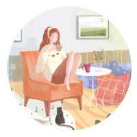

---关于我---
宇宙山河浪漫，生活点滴温暖，都值得我前进。
一定要好好努力才不辜负这个爱吃的胃，爱玩的心。

About me..
(此后回首页，可按蓝折纸鸟)
-
“民以食为天”，吃喝，当是人生头等大事。
“洪荒岁月的炉火阴灭，时代巨变的波澜不惊，最终都不着痕迹的投射在食物上，化作我们平凡的一日三餐，每一个仔细品味的人，都会心怀感念，余味无穷。”
-
影片中自有人生百态，我们总能在其中学到些什么，乃至感受到“生活在这个世界上是值得的”。
“艺术的伟大意义，基本上在于它能显示人的真正感情、内心生活的奥秘和热情的世界。”
-
我喜欢那些影像，被另一种更柔软的语言重新诠释过的新鲜样子，它们散发着年轻有趣的气质，令人向往。
它是感性上的思考，主观上的表现，是内心的一种表达，是喜怒哀乐。
-
有人说，“长大是一个倾诉欲不断下降的过程”，我们用朴素的童真和未经人事的洁白去交换长大的勇气、
成熟的情感、广阔的视野，或者其他认为值得的东西，既无法避免长大这场不可逆的交易，那就去记住它，不要让它轻易被自己遗忘。
-
“越透明的东西越神秘，宇宙本身就是透明的，只要目力能及，你想看多远就看多远，但越看越神秘。”
有时候仰望天空，天空都会回馈我以我有限的智识所不能企及的广阔的慰藉。
Meet you like the wind.
遇见你，温澜如风